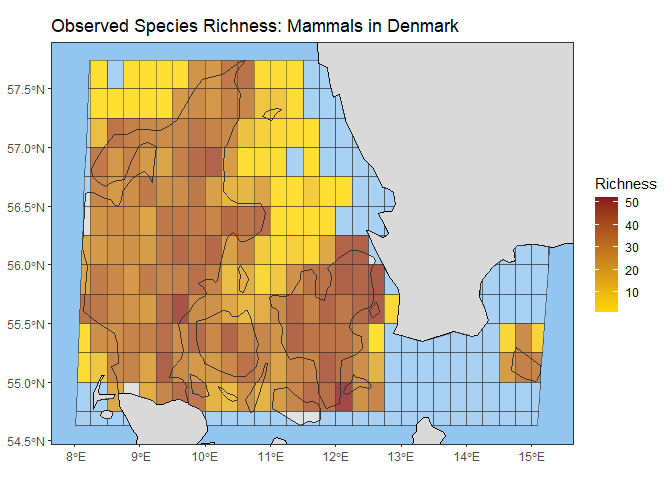

Analyze biodiversity trends and spatial patterns from GBIF data cubes, using flexible indicators like richness, evenness, and more.
Overview
Biodiversity researchers need robust and standardized tools to analyze the vast amounts of data available on platforms like GBIF. The b3gbi package leverages the power of data cubes to streamline biodiversity assessments. It helps researchers gain insights into:
- Changes Over Time: How biodiversity metrics shift throughout the years.
- Spatial Variations: Differences in biodiversity across regions, identifying hotspots or areas of concern.
- The Impact of Factors: How different environmental variables or human activities might affect biodiversity patterns.
Key Features
b3gbi empowers biodiversity analysis with:
- Standardized Workflows: Simplify the process of calculating common biodiversity indicators from GBIF data cubes.
- Flexibility: Calculate richness, evenness, rarity, taxonomic distinctness, Shannon-Hill diversity, Simpson-Hill diversity, and more.
- Analysis Options: Explore temporal trends or create spatial maps.
- Visualization Tools: Generate publication-ready plots of your biodiversity metrics.
Installation
You can install the development version of b3gbi from GitHub with:
# install.packages("devtools")
devtools::install_github("b-cubed-eu/b3gbi")Example
This is a basic example which shows you how to calculate and plot a map of species richness for a data cube containing GBIF occurrence data on amphibians in Europe:
# Load package
library(b3gbi)
# Load GBIF data cube
cube_name <- system.file("extdata", "denmark_mammals_cube_eqdgc.csv", package = "b3gbi")
# Prepare cube
mammal_data <- process_cube(cube_name)
# Calculate diversity metric
map_obs_rich_mammals <- obs_richness_map(mammal_data, level = "country", region = "Denmark")
# Plot diversity metric
plot(map_obs_rich_mammals, title = "Observed Species Richness: Mammals in Denmark")
For a more in-depth introduction, see the tutorial: https://b-cubed-eu.github.io/b3gbi/articles/b3gbi.html.